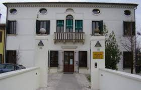

Edificata dalla nobile famiglia veneziana dei Bernardo tra la fine del XV e l’inizio del XVI secolo su un’ansa del Muson vecchio, appartenne successivamente ai Milani, ai Civran, ai Balbi Valier, ai Castelli ed ai Querini. Attualmente è proprietà del Comune di Camposampiero che l’ha riportata all’antico splendore con un accurato restauro. È sede della Federazione dei Comuni del Camposampierese e dello IAT, l’ufficio turistico territoriale. Alla villa si accede attraverso un ponte in asse con il portale d’ingresso. La facciata principale è quella ovest che presenta al piano terra un portale architravato e finestre incorniciate in modo semplice. Al primo piano si notano quattro finestre come quelle sottostanti e un balconcino poggiato su mensole che delimita una serliana (apertura centrale ad arco e due laterali architravate). Il sottotetto è invece illuminato da quattro oculi ellittici, e un semi-oculo tamponato sopra l’apertura ad arco che perfeziona la simmetria evitando di spezzarla. Nella facciata est, originariamente la principale, si nota al piano terra un portale architravato con lunetta tamponata affiancato da finestre dello stesso stile della facciata ovest. Al piano nobile la luce è assicurata da una trifora, mentre il sottotetto e illuminato da quattro oculi ovali. Una cornice dentellata impreziosisce il sottogronda sui quattro fronti. All’interno, il piano terra si compone di un salone centrale, adibito originariamente a soggiorno-zona pranzo, e di quattro saloni laterali che fungevano da cucina, ripostiglio e sale di servizio. Lo schema si ripete, simmetricamente, al piano superiore che fungeva da zona notte. Sono meritevoli di attenzione il camino, i solai con travature a vista decorate a mano, i pavimenti - originali in pietra al piano terra, in terrazzo veneziano al piano superiore - alcuni affreschi databili tra la fine dell’Ottocento e il primo Novecento. Di recente è riemerso l’intonaco dell’approdo fluviale della villa.
